Passo a passo para preparar a IDE VSCode para análise, desenvolvimento e depuração de código Advpl/TLPP do ERP Protheus, em ambiente Windows.
Ferramentas obrigatórias:
Ferramentas não-obrigatórias ( mas recomendado ):
O primeiro passo é efetuar o download das ferramentas. Caso não deseje utilizar o Git no momento, considerar somente os passos referente ao VSCode.
VSCode: https://code.visualstudio.com/download
Git: https://git-scm.com/downloads
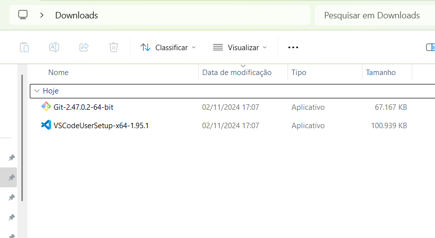
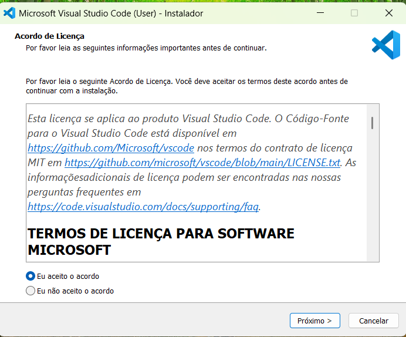
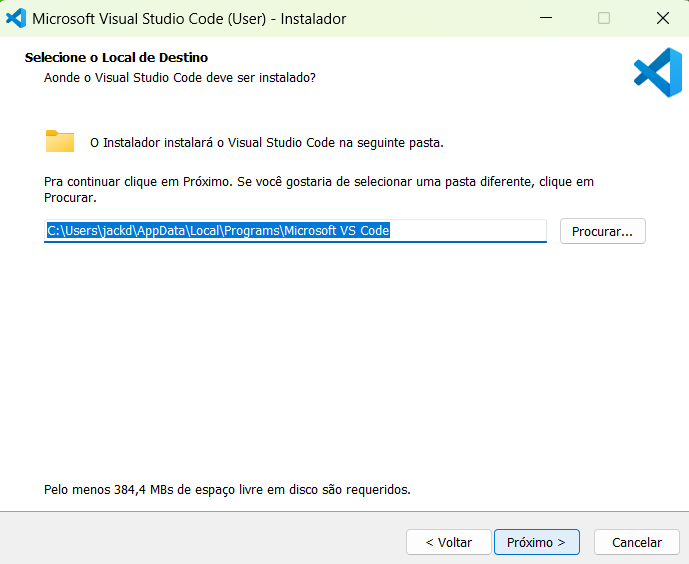
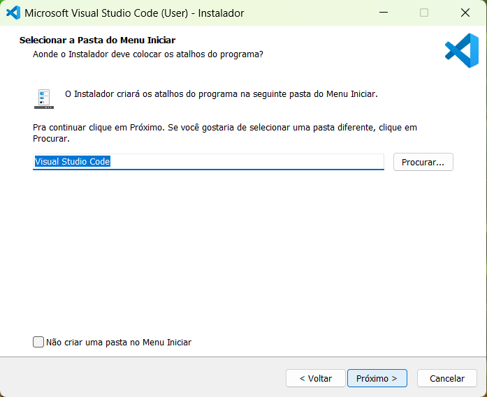
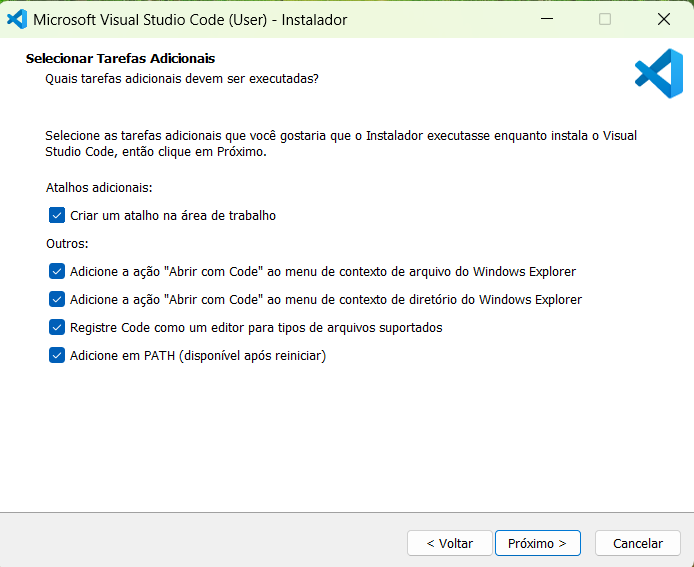
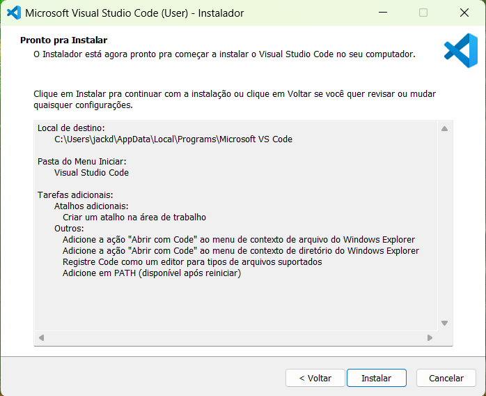
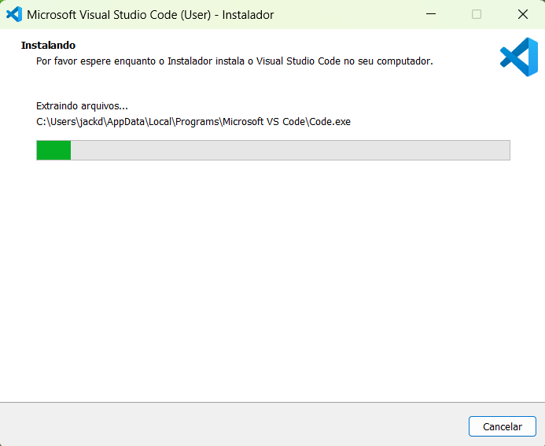
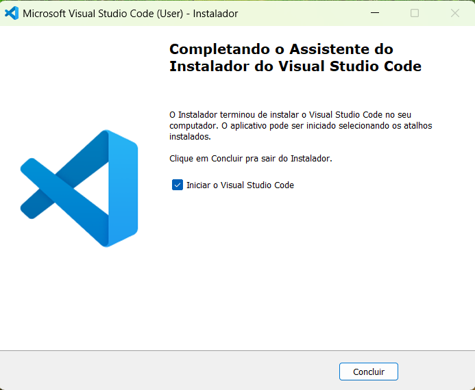
Vamos instalar o plugin do “TDS”, responsável pela conexão com o servidor Protheus, compilação e debug dos códigos Advpl/TLPP. Na lateral, clique na opção “Extensions”. 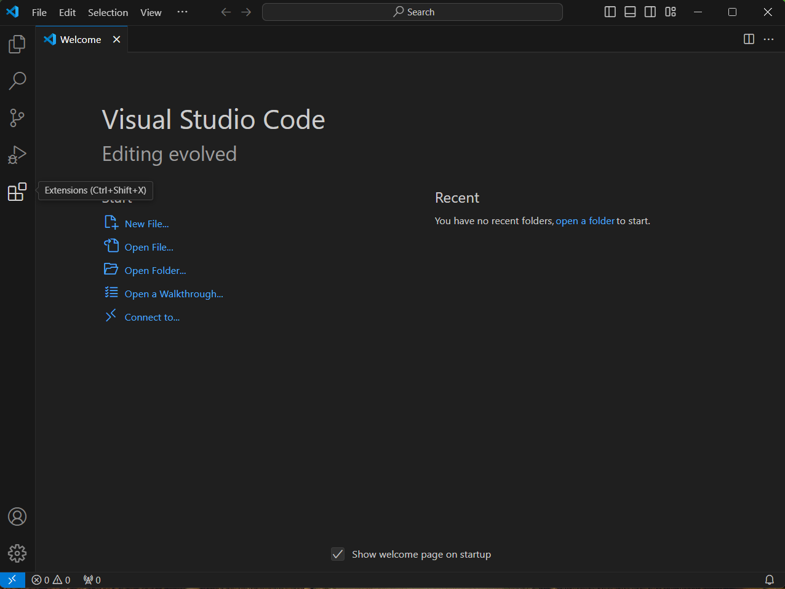
Digite “tds” e escolha a opção “TOTVS Developer Studio for VSCode”. Clique no botão “Install”.
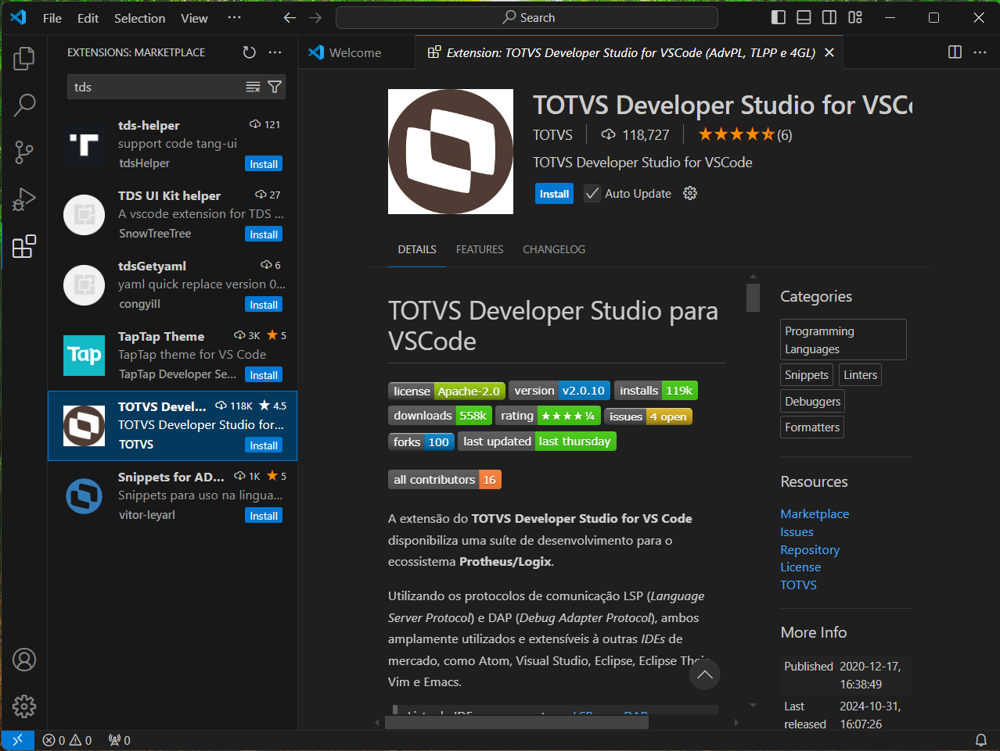
Pronto, plugin instalado. Por padrão esta tela aparece para configurar a conexão ao ambiente Protheus no workspace atual. 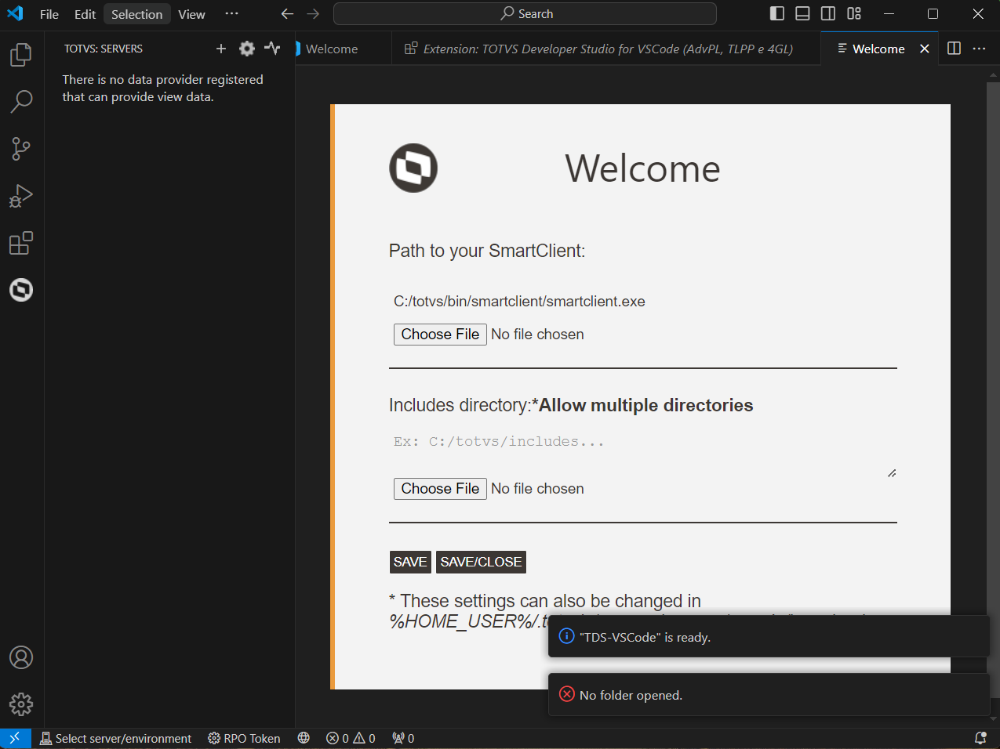
Vamos agora a instalação do Git, ferramenta para controle de versão dos códigos. 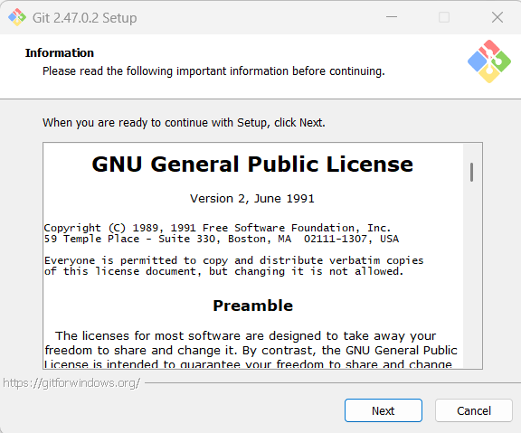
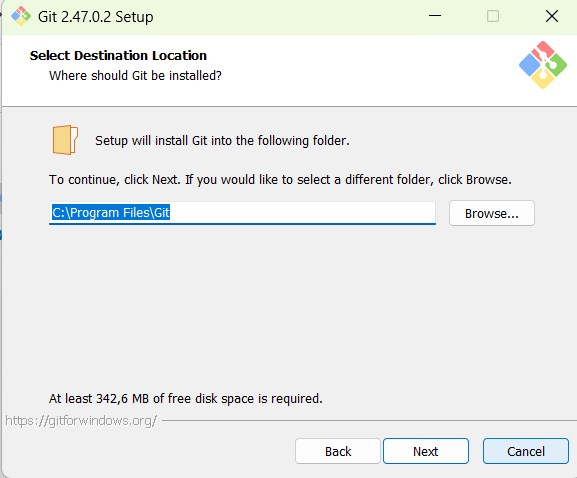
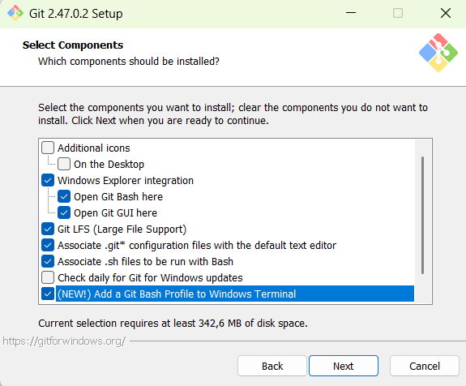
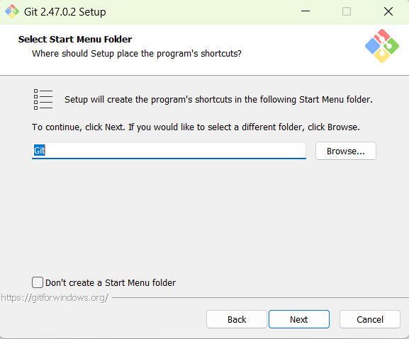
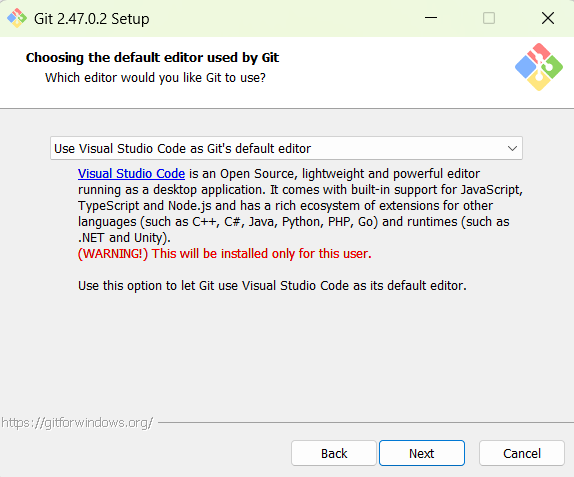
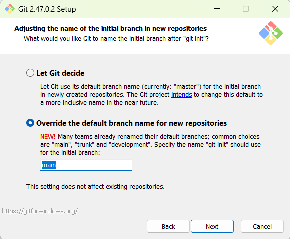
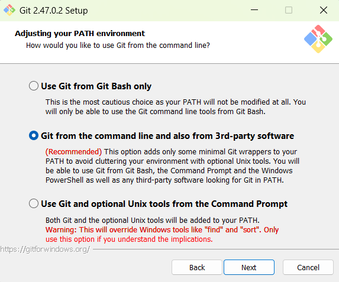
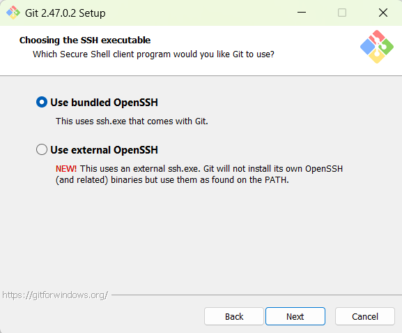
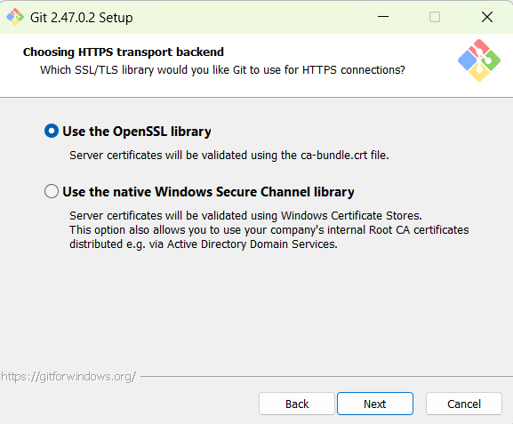
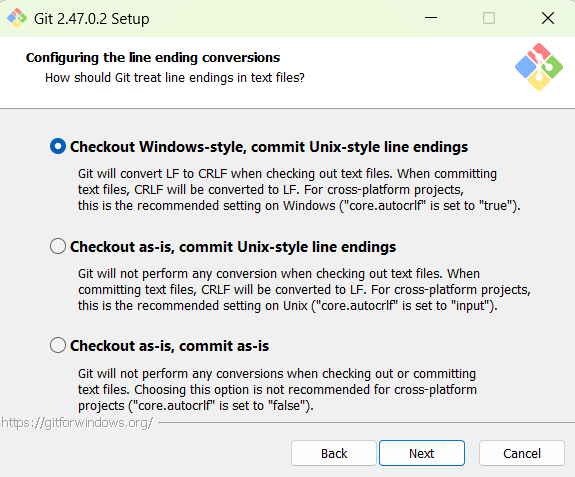
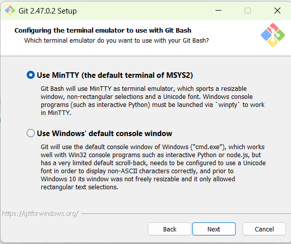
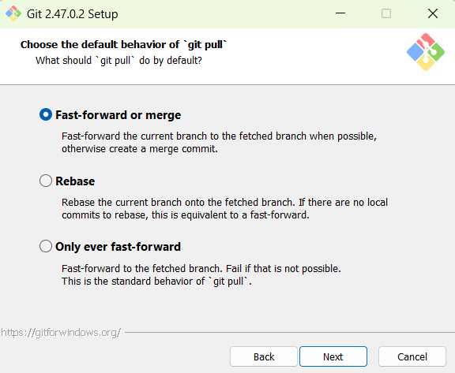
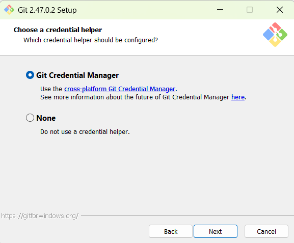
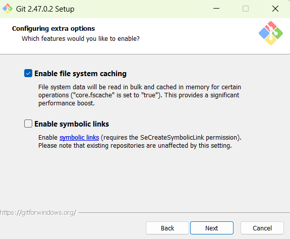
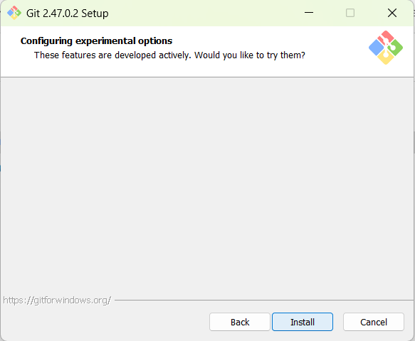
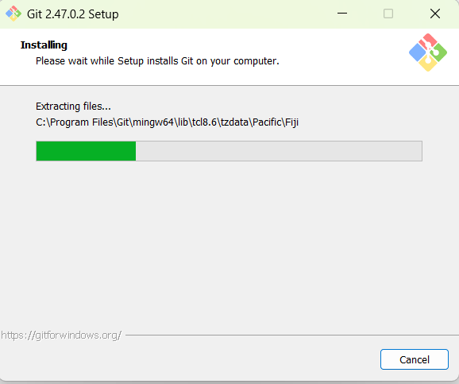
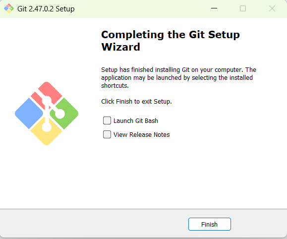
Vamos entender agora sobre a configuração do Workspace, que é o espaço de trabalho do projeto. Para um projeto Advpl ou TLPP, você pode trabalhar com um workspace ou somente com o diretório raiz do projeto.